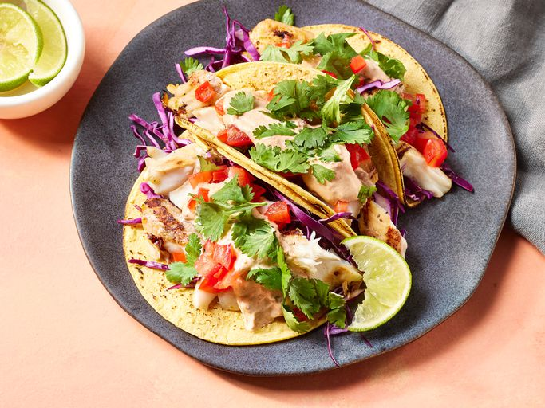
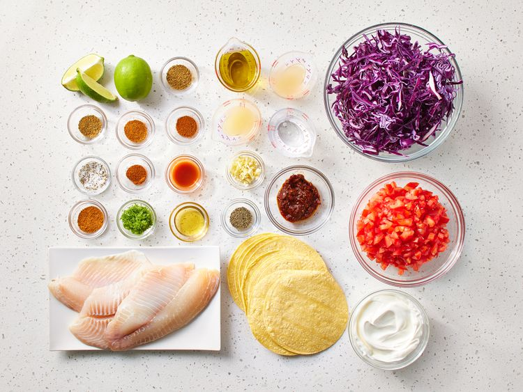
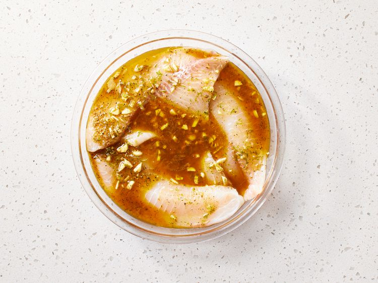
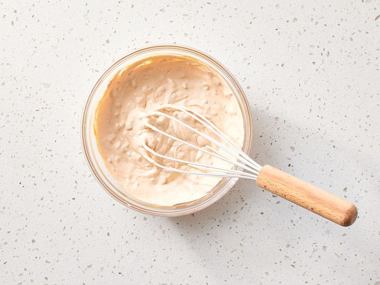
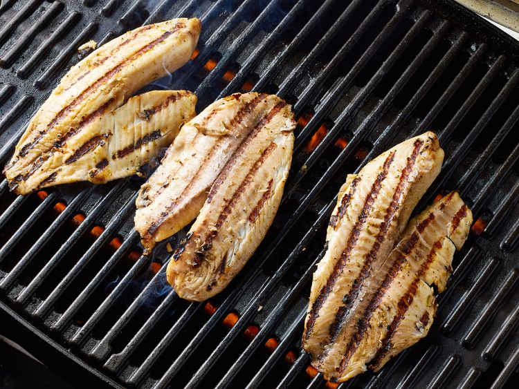
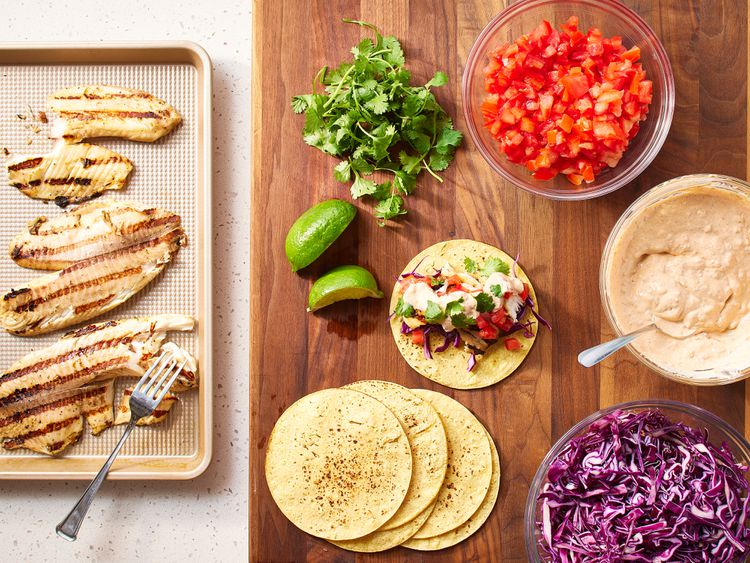

Back
Grilled Fish Tacos with Chipotle-Lime Dressing

Description
These grilled fish tacos are made with marinated fish fillets and topped
with a spicy chipotle-lime dressing. Choose toppings to suit your taste,
or include typical accompaniments such as salsa fresca, cabbage, a squeeze
of lime juice, and chopped cilantro.
Ingredients
Marinated Fish:
- ¼ cup extra virgin olive oil
- 2 tablespoons distilled white vinegar
- 2 tablespoons fresh lime juice
- 2 teaspoons lime zest
- 2 cloves garlic, minced
- 1 ½ teaspoons honey
- 1 teaspoon seafood seasoning, such as Old Bay
- 1 teaspoon hot pepper sauce, or to taste
- ½ teaspoon cumin
- ½ teaspoon chili powder
- ½ teaspoon ground black pepper
- 1 pound tilapia fillets, cut into chunks
Dressing:
- 1 (8 ounce) container light sour cream
- ½ cup adobo sauce from chipotle peppers
- 2 tablespoons fresh lime juice
- 2 teaspoons lime zest
- ½ teaspoon seafood seasoning, such as Old Bay
- ¼ teaspoon cumin
- ¼ teaspoon chili powder
- salt and pepper to taste
Assembly:
- 1 (10 ounce) package tortillas
- 3 ripe tomatoes, seeded and diced
- 1 small head cabbage, cored and shredded
- 1 bunch cilantro, chopped
- 2 limes, cut in wedges
Directions
- Gather all ingredients.

-
Prepare marinated fish: Whisk olive oil, vinegar, lime juice, lime zest,
garlic, honey, seafood seasoning, hot pepper sauce, cumin, chili powder,
and black pepper together in a bowl until blended. Place tilapia in a
shallow dish and pour the marinade over the fish; cover the dish with
plastic wrap and refrigerate for 6 to 8 hours.

-
Make the dressing: Combine sour cream and adobo sauce in a bowl. Stir in
lime juice, lime zest, seafood seasoning, cumin, and chili powder. Add
salt and pepper to taste. Cover and refrigerate until needed.

-
Preheat an outdoor grill for high heat and lightly oil the grate. Set
the grate 4 inches from the heat.
-
Remove fish from the marinade, drain off any excess and discard the
marinade. Grill fish pieces until easily flaked with a fork, turning
once, about 9 minutes.

-
Assemble tacos: Place fish pieces in the center of tortillas with
desired amounts of tomatoes, cabbage, and cilantro; drizzle with
dressing.

-
To serve, roll up tortillas around fillings, and garnish with lime
wedges.